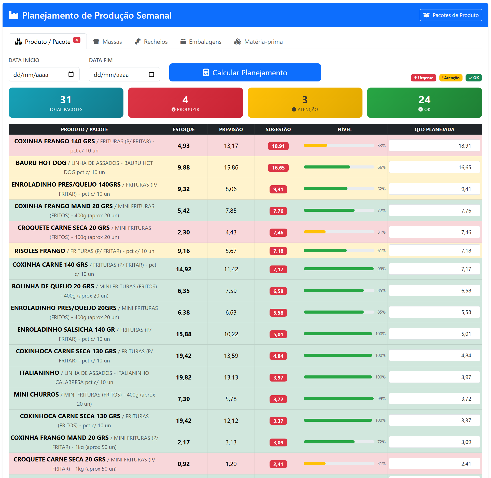
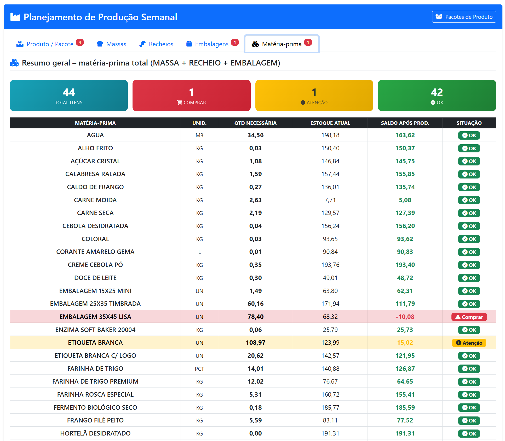
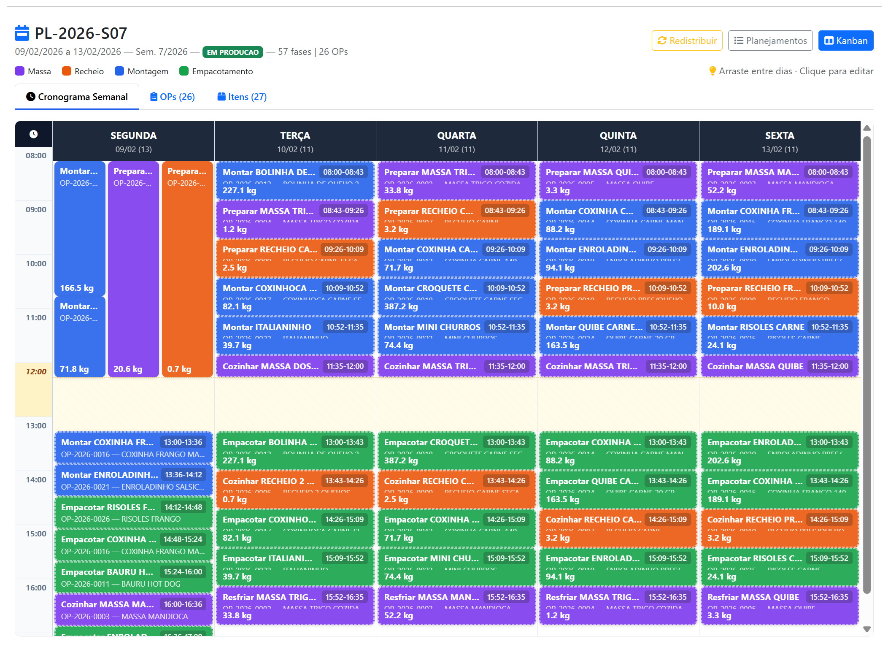
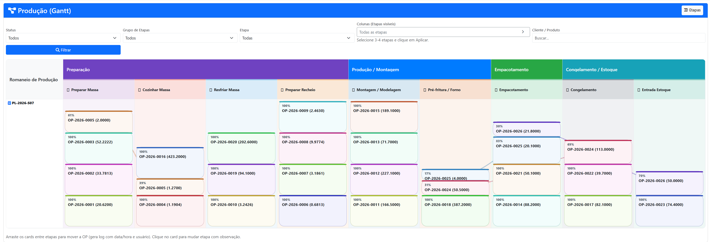
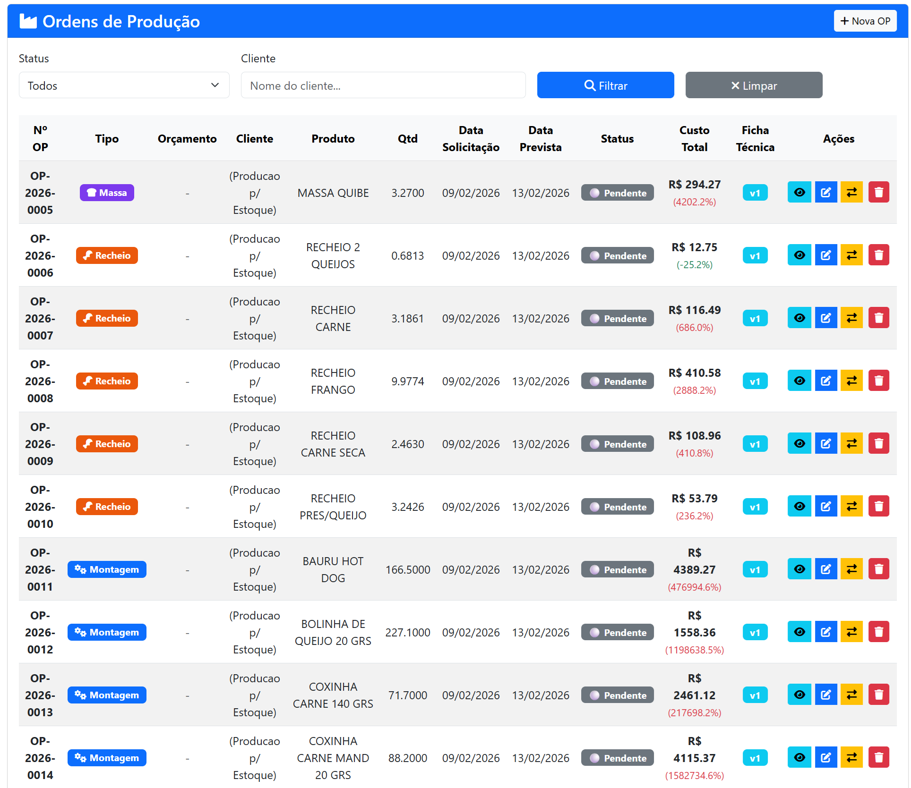
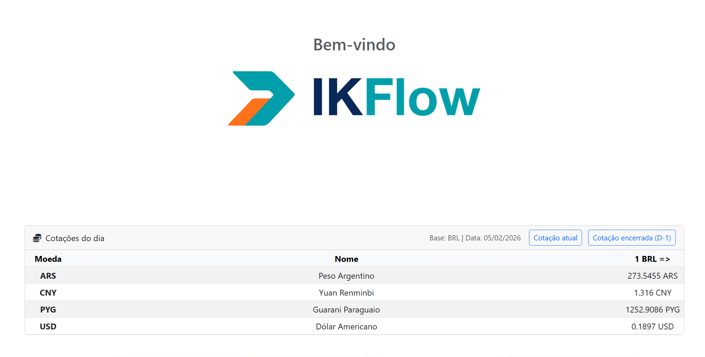

POC — Sistema de Gestão Industrial Indústria de Salgados
Plataforma completa para planejamento de produção, controle de estoque, ordens de produção e gestão operacional — personalizada para a indústria alimentícia.
Planejamento SemanalOrdens de ProduçãoControle de EstoqueMulti-país BR/PY
Fevereiro 2026 — Apresentação POC
O que o sistema já contempla
O IK Flow é um ERP web completo já em operação. Abaixo, os módulos principais disponíveis:
📦 Cadastros Base
Produtos, categorias e pacotes
Clientes e fornecedores
Matérias-primas e insumos
Fichas técnicas com composição
Linhas de produção configuráveis
💰 Comercial
Orçamentos com cálculo automático
Pedidos de venda
Tabelas de preço
Margem e markup por produto
Histórico por cliente
📊 Estoque
Controle em tempo real
Entradas e saídas
Previsão de consumo semanal
Alertas de nível (Urgente/Atenção/OK)
Saldo projetado após produção
🏭 Produção Industrial
Planejamento semanal de produção
Geração automática de OPs
Fases de produção por OP
Cronograma visual interativo
Kanban de produção (Gantt)
👥 Usuários e Permissões
Controle de acesso por perfil
Permissões granulares por módulo
Log de ações (auditoria)
Multi-empresa
💱 Multi-moeda / Multi-país
Cotações em tempo real (BRL, USD, PYG, ARS, CNY)
Conversão automática de valores
Suporte a operação Brasil + Paraguai
Base para cálculo tributário cross-border
Personalizações desenvolvidas para a Indústria de Salgados
🧮 Planejamento Inteligente de Produção
Cálculo automático de quantidades a produzir com base no estoque atual, previsão de vendas e nível de segurança. Classifica cada produto como Urgente, Atenção ou OK.
🍞 Fichas Técnicas por Tipo
Separação automática por Massas, Recheios, Embalagens e Matéria-prima. Cada ficha calcula ingredientes proporcionalmente à quantidade planejada.
📋 Geração Automática de OPs
A partir do planejamento, o sistema gera automaticamente Ordens de Produção separadas por tipo: Massa, Recheio e Montagem, com fases de produção pré-definidas.
📅 Cronograma Semanal Visual
Timeline interativa com drag-and-drop para reorganizar fases entre dias e horários. Fases simultâneas lado a lado. Divisão parcial/total de cards entre dias.
🔄 Kanban de Produção
Visão Kanban com etapas: Preparar → Cozinhar → Resfriar → Montar → Pré-fritura → Empacotar → Congelar → Estoque. Arraste cards entre etapas com log.
📊 Controle de Matéria-prima por Fase
Cálculo automático de necessidade de matéria-prima separado por tipo (massa, recheio, embalagem). Indicadores visuais de Comprar, Atenção e OK.
Planejamento de Produção Semanal
Cálculo automático de sugestão de produção com base em estoque atual, previsão de vendas e nível de segurança. Classificação: Urgente / Atenção / OK — 31 pacotes monitorados.
ImplementadoPersonalizado

Screenshot: Planejamento de Produção Semanal Salve como img/poc/poc_planejamento.png
'">
Controle de Matéria-prima — Resumo Geral
Visão consolidada de todos os insumos necessários (massa + recheio + embalagem) com situação de estoque.
44 itens1 Comprar1 Atenção42 OK
Screenshot: Matéria-prima Geral Salve como img/poc/poc_materiaprima.png
'">
Controle de Matéria-prima — Massas
Detalhe por tipo de massa com quantidade total estimada e necessidade de cada insumo vs estoque atual.

Screenshot: Detalhe Massas Salve como img/poc/poc_massas.png
'">
Cronograma Semanal Interativo
Drag & Drop entre dias · Dividir/Mover parcial ou total · Merge automático ao devolver · Cores por tipo (Massa, Recheio, Montagem, Empacotamento)

Screenshot: Cronograma Semanal Interativo Salve como img/poc/poc_cronograma.png
'">
Kanban de Produção (Gantt)
Fluxo em 8 etapas: Preparar Massa → Cozinhar → Resfriar → Preparar Recheio → Montagem → Pré-fritura → Empacotamento → Congelamento → Estoque. Arraste cards entre etapas.

Screenshot: Kanban de Produção Salve como img/poc/poc_kanban.png
'">
Ordens de Produção
Geração automática a partir do planejamento. Tipo (Massa/Recheio/Montagem) · Produto e quantidade · Custo total via ficha técnica · Status: Pendente → Em Produção → Concluída · 26 OPs nesta semana.
ImplementadoPersonalizado

Screenshot: Ordens de Produção Salve como img/poc/poc_ops.png
'">
Operação Multi-país Brasil + Paraguai

Screenshot: Cotações Multi-moeda Salve como img/poc/poc_cotacoes.png
'">
💱 Cotações em Tempo Real
BRL, USD, PYG (Guarani), ARS, CNY — atualizadas automaticamente via API do Banco Central.
🏭 Produção no Paraguai
Suporte para operação fabril no Paraguai com custos em Guarani e venda no Brasil em Reais. Objetivo: reduzir carga tributária e maximizar margem.
📊 Análise de Viabilidade
Comparativo de custos BR vs PY, incluindo logística, impostos e câmbio para maximizar margem de lucro.
🌐 Multi-empresa
Gestão de entidades jurídicas separadas (BR e PY) com consolidação de dados em um único painel gerencial.
O que falta ser implementado
Módulo / Funcionalidade
Descrição
Status
Prazo Est.
Romaneio de Produção
Documento de acompanhamento diário com checklist de fases, assinatura do operador e registro de perdas/sobras.
Em Desenvolvimento
2 semanas
Apontamento de Produção
Registro de quantidade real produzida por fase, tempo gasto, operador responsável e observações.
Planejado
3 semanas
Controle de Perdas
Registro e análise de perdas por fase (quebra, desperdício, reprocesso). Dashboard com indicadores.
Planejado
2 semanas
Dashboard Gerencial
Painel executivo com KPIs: produtividade, custo/kg, OEE, perdas, comparativo semanal.
Planejado
3 semanas
Módulo Fiscal BR/PY
Cálculo tributário para operação cross-border: ICMS, IPI, PIS/COFINS (BR) e IVA (PY). Simulação de cenários.
Planejado
6 semanas
Custeio por Absorção
Rateio de custos indiretos (energia, mão de obra, depreciação) por produto. Custo real vs planejado.
Planejado
4 semanas
Relatórios e Exportação
Relatórios em PDF/Excel: produção diária, consumo de MP, custos, rastreabilidade de lote.
Planejado
3 semanas
Integração Balança/Leitor
Integração com balanças industriais e leitores de código de barras para apontamento automático.
Planejado
4 semanas
App Mobile (Chão de Fábrica)
Interface simplificada para operadores: visualizar OP do dia, registrar produção, reportar problemas.
Planejado
6 semanas
Roadmap de Desenvolvimento
Concluído — Jan/Fev 2026
Fase 1 — Core Industrial
Planejamento semanal, geração de OPs, cronograma visual, Kanban, controle de matéria-prima, fichas técnicas, cotações multi-moeda.
Fev/Mar 2026 — Semanas 1 a 4 (simultâneo)
Fase 2 + 3 + 4 — Desenvolvimento Paralelo
Acompanhamento: Romaneio, apontamento, controle de perdas Custos: Dashboard gerencial, custeio por absorção, KPIs Multi-país: Módulo fiscal BR/PY, simulação tributária, multi-empresa
Mar 2026 — Semanas 5 a 6 (simultâneo)
Fase 5 — Automação, Mobile e Finalização
Integração com balanças/leitores, app mobile chão de fábrica, relatórios, testes finais e go-live.
Desenvolvimento Simultâneo
Todas as frentes em paralelo para entrega acelerada:
Core Industrial
CONCLUÍDO
Acompanhamento
Sem 1–4
Custos
Sem 1–4
Multi-país/Fiscal
Sem 1–4
Automação/Mobile
Sem 5–6
Sem 1Sem 2Sem 3Sem 4Sem 5Sem 6
Prazo Total Estimado6 semanas
Previsão de conclusão: Março 2026
Investimento
Implantação
Pagamento único
US$ 5.000
≈ R$ 26.000
Configuração e personalização
Migração de dados
Treinamento da equipe
Suporte dedicado na implantação
Fase 1 — Operação Brasil
Mensalidade
US$ 1.800
≈ R$ 9.400 /mês
Todos os módulos do sistema
Planejamento de produção
Ordens de produção + Kanban
Controle de estoque e MP
Suporte e atualizações
Fase 2 — Brasil + Paraguai
Mensalidade
US$ 3.200
≈ R$ 16.700 /mês
Tudo da Fase 1 +
Operação multi-país (BR + PY)
Multi-moeda e conversão automática
Módulo fiscal cross-border
Consolidação multi-empresa
Aplicada a partir do início efetivo da operação no Paraguai
Condições: Valores fixados em dólar (USD) e convertidos para reais na data de faturamento, conforme cotação vigente.
A Fase 2 é aplicada somente a partir do início efetivo da operação no Paraguai.
Obrigado!
Estamos prontos para transformar a operação da sua indústria com tecnologia, eficiência e inteligência.
Próximos passos?
IK Flow — Sistema de Gestão Industrial Fevereiro 2026